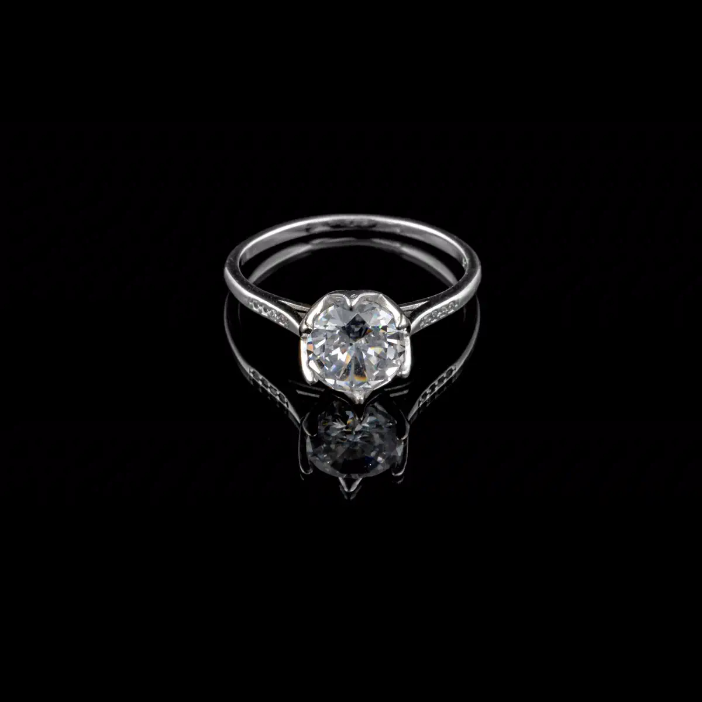
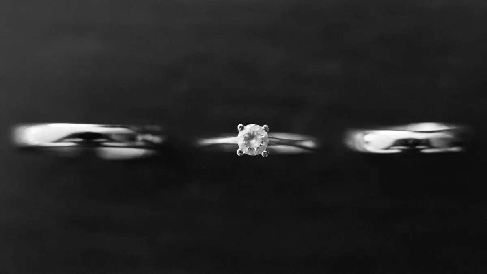
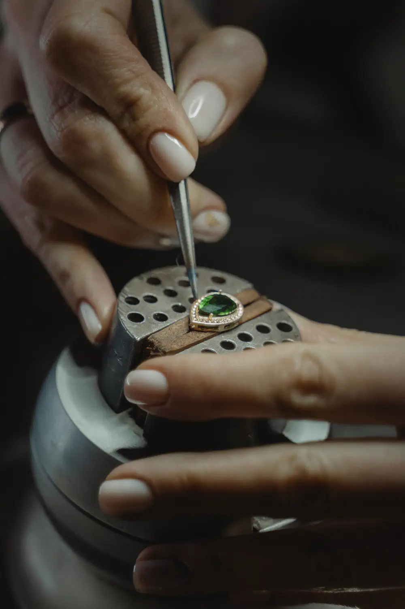
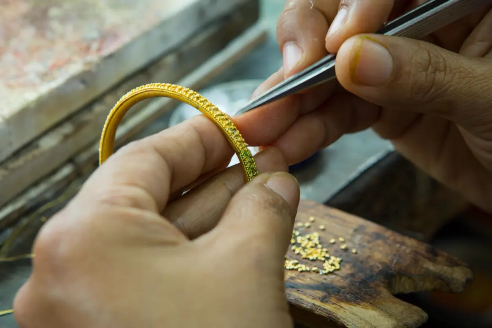
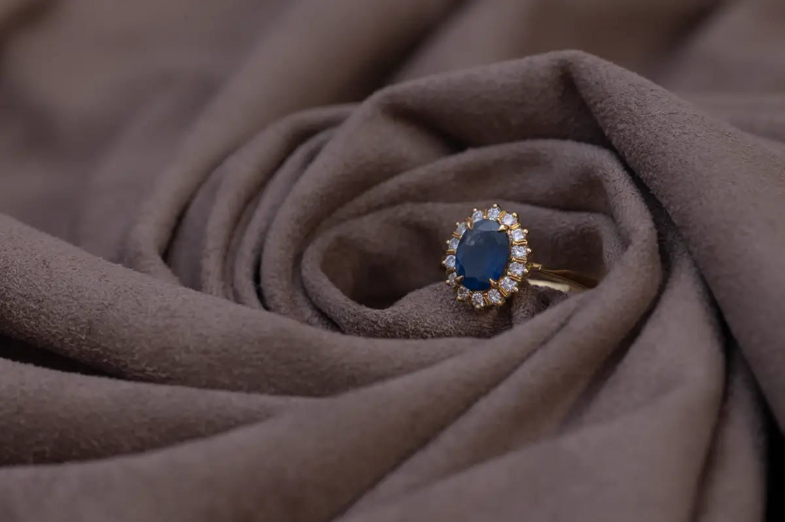
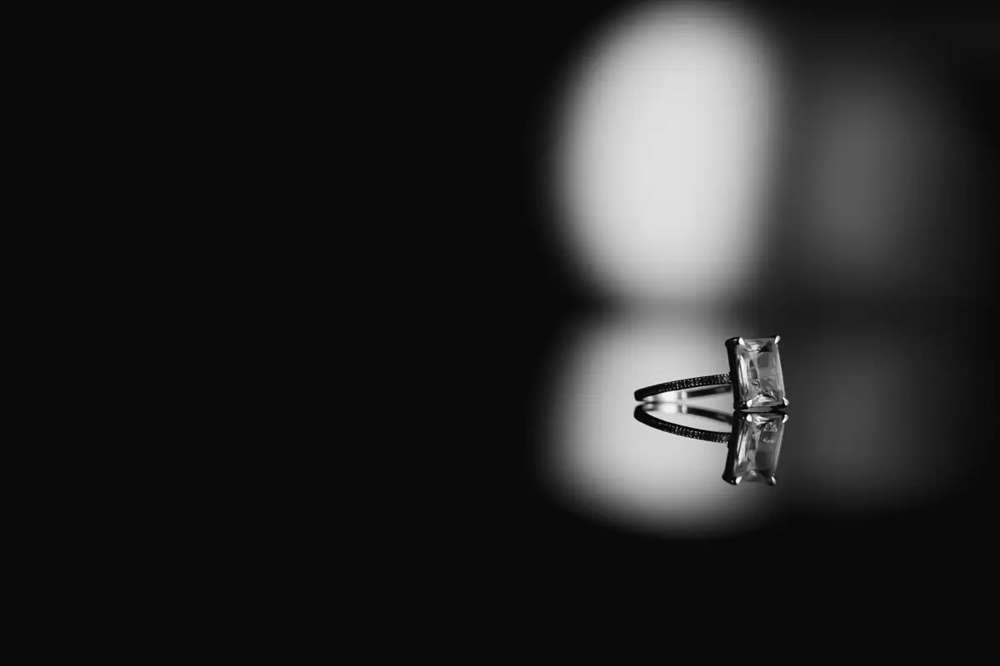
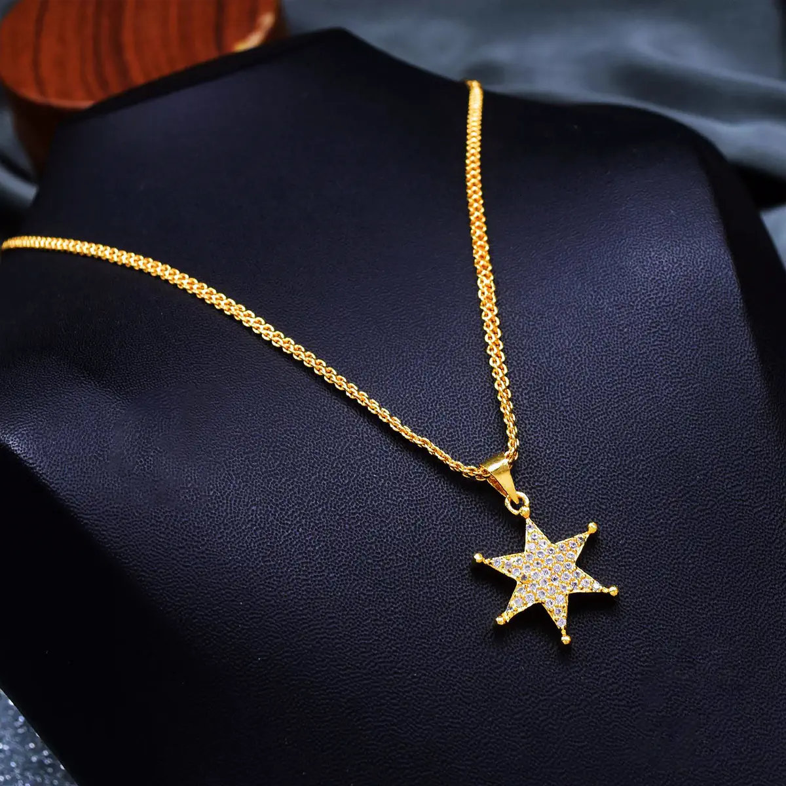
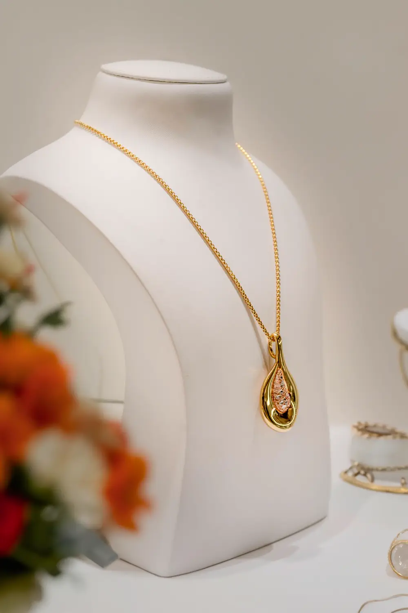
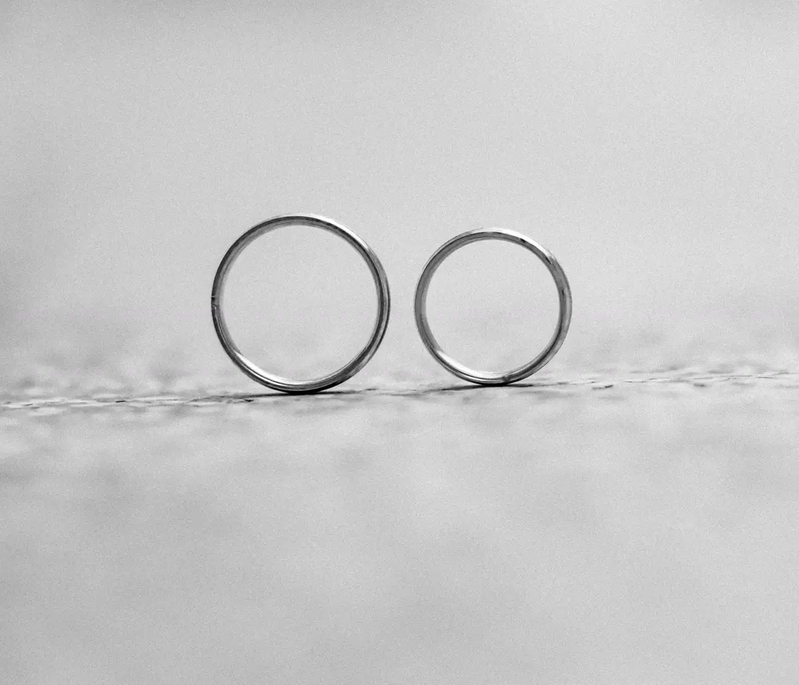
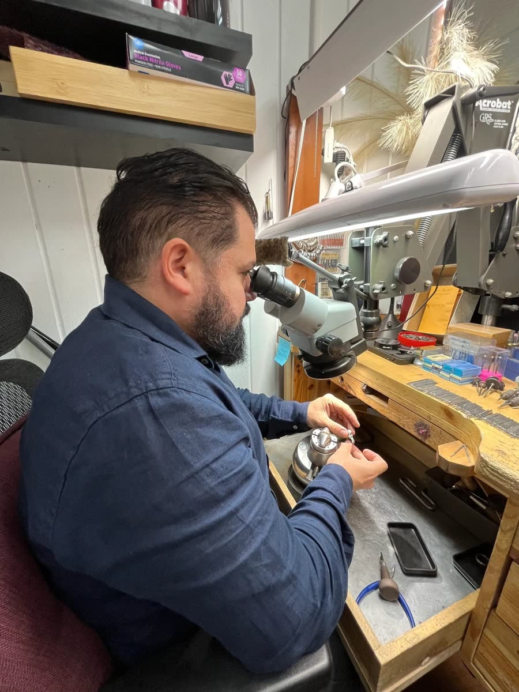

Fine Jewelry · Custom Design · Restoration
Adriano
Every piece begins as a drawing.
333 Washington Street · Boston
Act I · The Vow
Some rings are bought. Yours will be fitted.
A wedding ring is worn for the rest of a life. So it is chosen in person — the metal, the width, the profile, the way it sits against your hand — in a quiet hour that belongs to you. That is why Adriano works by appointment.

The fitting
Two rings · one appointment By appointment · 857‑991‑1679

Bring the person. Bring an unhurried hour. The rest is our work
Act II · The Craft
From sketch to setting.
Custom is not a catalogue. It is a drawing that becomes a wax, a casting, a setting — with your approval at every stage. It is the same sequence whether the piece is new, or a hundred years old and coming back to life.
-
01 / Sketch
Graphite before anything is cut.
Proportion, stone size, how it sits against the finger. Nothing is committed until the drawing is right.
-
02 / Wax
Carved at full scale.
The design cut in wax at the size it will be worn. This is the last chance to change your mind.
-
03 / Cast
The wax burns away.
Molten gold takes its place. One piece, one mould, no second copy.
-
04 / Set
Seated by hand, under magnification.
Each stone placed and closed individually. Millimetres decide whether it catches light.
-
05 / Finish
Filed, polished, inspected.
Then it goes in a box with your name on it.
Commissions
Made to order.
Bands cut to a profile no case holds, rings built around a family stone, pieces that exist because somebody asked. Photographs take their colour as you reach them — on this site, the work is the only thing that ever carries any.







Act III · The Second Life
Repair. Restore. Return.
Most work is done at the bench on site, so your piece never leaves the building. Everything is quoted before anything begins, and heirlooms come back without losing what makes them old.
- Resizing
- Up or down, and kept perfectly round.
- Chains & clasps
- Soldered, replaced, made safe again.
- Stones
- Tightened, matched, and re‑set.
- Prongs
- Rebuilt before they let go of anything.
- Cleaning
- Professional and gentle — ask at the counter.
- Restoration
- Heirlooms kept old, made whole.

Act IV · The Maker
Twenty-three years at one bench.
I grew up in a family of jewelers. I learned to repair and to design in Europe, then brought that training to the United States, where I’ve spent twenty-three years building a practice on it. European precision, American expectations.
Every piece that leaves this bench has been through my hands.
Act V · The Visit
333 Washington Street, Boston.
- Downtown Crossing · MA 02108
- Open 09:00 – 16:30 · call ahead to confirm the day
- Store 857‑991‑1679 · Mobile 424‑206‑8618
- @adrianojewelry
Walk in during the day, or call and the hour is yours. Bring the idea, the heirloom, or the broken clasp — a conversation at the counter costs nothing.